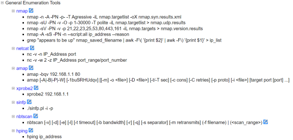

Testing Methodologies
In order to work more systematically, we can adopt one of
the existing penetration testing methodologies from which i have taken inspirations.
Best documents on testing
methodologies:
•
Open Source Security Testing Methodology Manual
(OSSTMM)
Released by Pete Herzog, distributed by Institute for Security and Open Methodologies
(ISECOM)
It does not go into depth with particular commands and tools
It has templates for almost every
kind of test it describes
•
Penetration Testing Execution
Manual(PTES)
Released by Chris Nickerson(of Lares Consulting) and has involved numerous
collaborators
•
NIST Special
Publication 800-115: Technical Guide of Information Security Testing and Assessment It has from the
other things:
◇ a useful template for Rules of Engagement, helping testers and target system personnel agree
upon various vital aspects of how the testing will be conducted
◇ it help us to dialogue with management when
they want to deviate from NIST guide methodology
•
Open Web Application Security Project(OWASP)
Testing Guide Focus is on Web Application Testing. It gets quite deep into techniques and tools
•
Penetration Testing Framework
Released by Toggmeister (aka Kev Orrey) and Lee Lawson
Focus is on network penetration tests
Deep, with
specific tools and commands
Step by step, with links to tools
ISO7001 ???